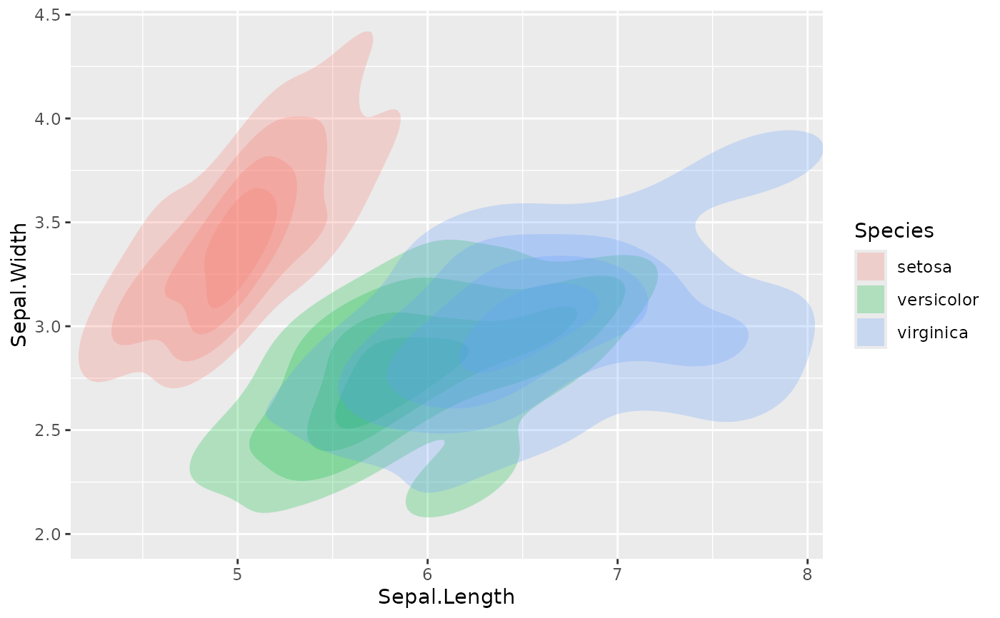
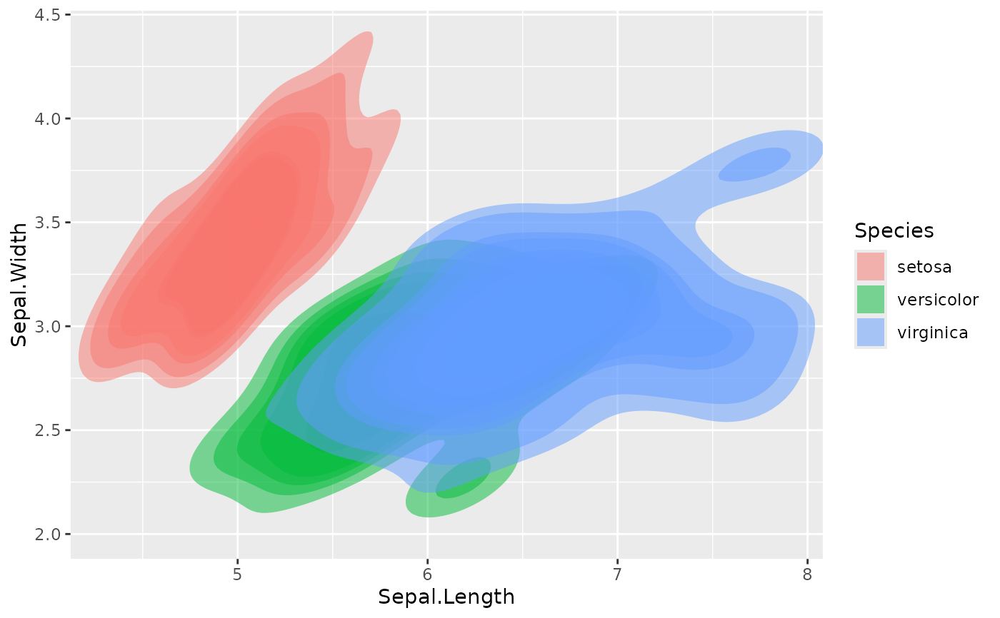
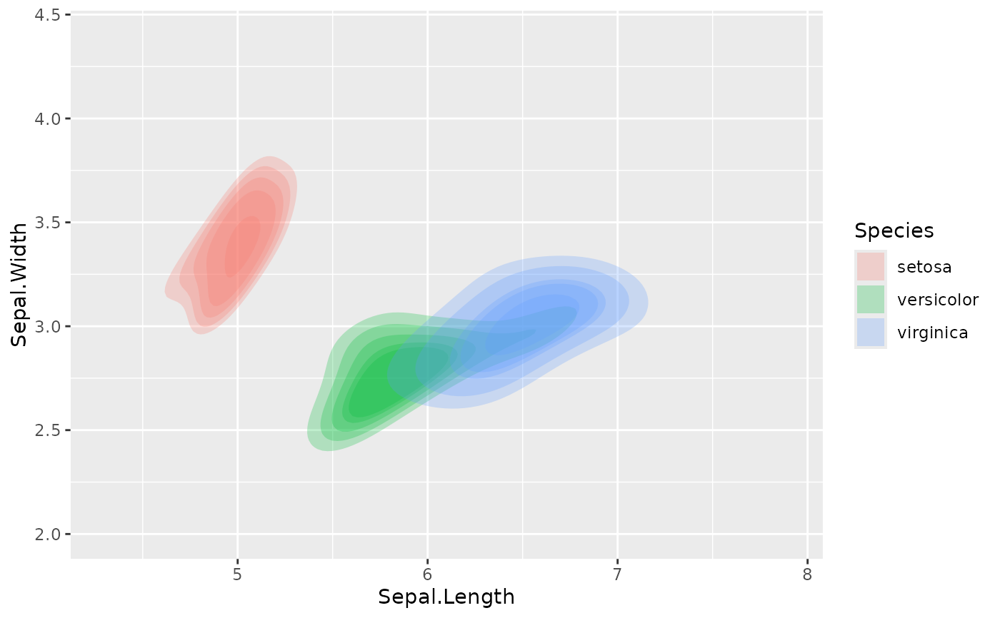
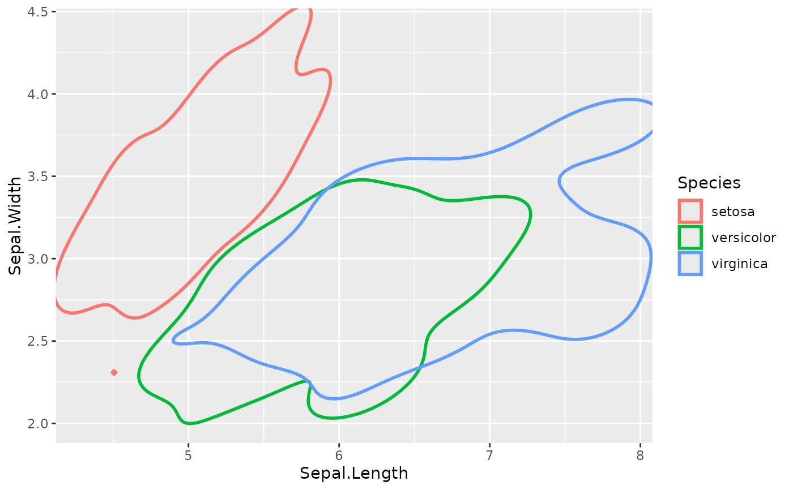
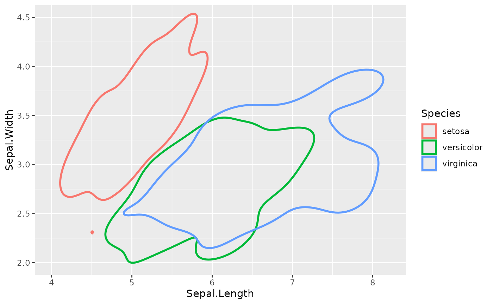
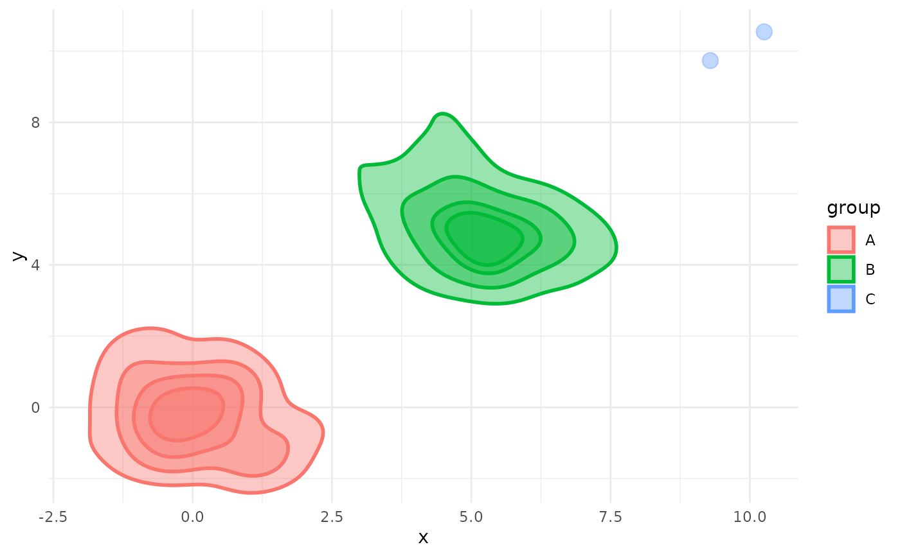

Draw 2D Kernel Density Estimate Polygons by Quantiles
geom_kde2d.RdThis geom creates polygons based on a 2D kernel density estimate, which is
calculated using the ks::kde() function. It serves as an
alternative to ggplot2::geom_density_2d(), displaying the results
as filled polygons corresponding to specified quantiles.
If the density estimation fails for a group (e.g., due to too few unique
points), the geom will gracefully fall back to plotting the raw data points
for that group, inheriting aesthetics from ggplot2::geom_point().
Usage
geom_kde2d(
mapping = NULL,
data = NULL,
inherit.aes = TRUE,
quantiles = 4,
min_prob = 0.02,
show.legend = NA,
fallback_to_points = TRUE,
...
)Arguments
- mapping
Set of aesthetic mappings created by
aes(). If specified andinherit.aes = TRUE(the default), it is combined with the default mapping at the top level of the plot. You must supplymappingif there is no plot mapping.- data
The data to be displayed in this layer. There are three options:
If
NULL, the default, the data is inherited from the plot data as specified in the call toggplot().A
data.frame, or other object, will override the plot data. All objects will be fortified to produce a data frame. Seefortify()for which variables will be created.A
functionwill be called with a single argument, the plot data. The return value must be adata.frame, and will be used as the layer data. Afunctioncan be created from aformula(e.g.~ head(.x, 10)).- inherit.aes
If
FALSE, overrides the default aesthetics, rather than combining with them. This is most useful for helper functions that define both data and aesthetics and shouldn't inherit behaviour from the default plot specification, e.g.annotation_borders().- quantiles
Integer. The number of quantiles to display. For example,
quantiles = 4(the default) will draw quartiles.- min_prob
A numeric value in
[0, 1]. Sets the lowest probability quantile to be drawn. The default,0.02, helps avoid creating polygons around single outlier points.- show.legend
logical. Should this layer be included in the legends?
NA, the default, includes if any aesthetics are mapped.FALSEnever includes, andTRUEalways includes. It can also be a named logical vector to finely select the aesthetics to display. To include legend keys for all levels, even when no data exists, useTRUE. IfNA, all levels are shown in legend, but unobserved levels are omitted.- fallback_to_points
Logical. To prevent points from being drawn for groups that fail density estimation, set this to FALSE. For example, if you want more control over the point aesthetics, independent of the KDE regions, set this to FALSE and use geom_point to plot those points
- ...
Other arguments passed on to
ggplot2::layer(). These are often aesthetics used to set a fixed value, such ascolour = "red"oralpha = 0.5.
Aesthetics
geom_kde2d() understands the following aesthetics (required aesthetics are in bold):
xygroupalphacolour(controls the polygon outline)fill(controls the polygon fill)linetypelinewidth(controls the outline thickness)size(controls the point size)shape(used for the fallback points)
Learn more about setting these aesthetics in vignette("ggplot2-specs").
Examples
library(ggplot2)
# Basic usage with iris data
ggplot(iris, aes(x = Sepal.Length, y = Sepal.Width, fill = Species)) +
geom_kde2d()

# Adjusting quantiles to show deciles
ggplot(iris, aes(x = Sepal.Length, y = Sepal.Width, fill = Species)) +
geom_kde2d(quantiles = 10, alpha = 0.5)

# Using min_prob to show only density regions above the median
ggplot(iris, aes(x = Sepal.Length, y = Sepal.Width, fill = Species)) +
geom_kde2d(quantiles = 10, min_prob = 0.5)

# Creating an outline effect
ggplot(iris, aes(x = Sepal.Length, y = Sepal.Width, color = Species)) +
geom_kde2d(quantiles = 1, min_prob = 0, fill = NA)

# Creating an outline effect, and using coord_cartesian to expand the
# plot area so the full KDE regions show without clipping
ggplot(iris, aes(x = Sepal.Length, y = Sepal.Width, color = Species)) +
geom_kde2d(quantiles = 1, min_prob = 0, fill = NA) +
coord_cartesian(xlim = c(4, 8.2), ylim = c(2, 4.5), clip = "off")

# Example of fallback behavior
# Create a dataset where one group has too few points for density estimation
set.seed(123)
df <- data.frame(
x = c(rnorm(50), rnorm(50, 5), rnorm(2, 10)),
y = c(rnorm(50), rnorm(50, 5), rnorm(2, 10)),
group = rep(c("A", "B", "C"), c(50, 50, 2))
)
# A message will indicate that group "C" is plotted as points
ggplot(df, aes(x, y, fill = group, colour = group)) +
geom_kde2d(alpha = 0.4) +
theme_minimal()
#> No density estimate possible for group '3', plotting points instead: the leading minor of order 2 is not positive
